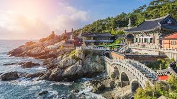
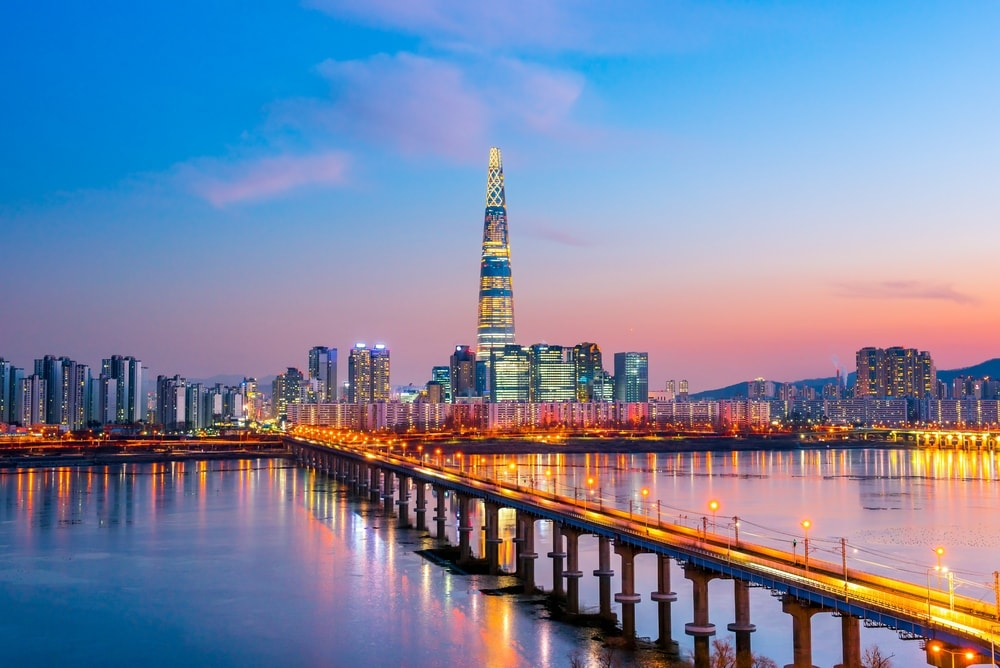
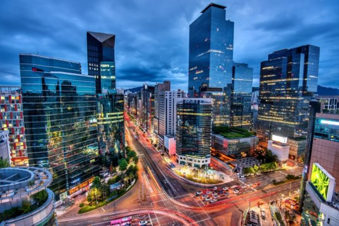
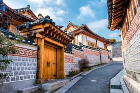
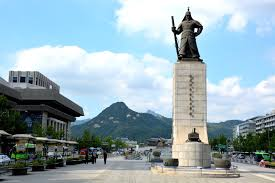

4-KOREA:





Why should you go to Korea??
History & Heritage
in traditional culture, South Korea shows off its history and heritage proudly. Home to 11 UNESCO World Heritage sites that include temples, palaces and fortresses in cities like Seoul, Gyeonggi and Jeju, learn all about the country’s imperial past. On your list of places to visit should be Haeinsa Temple, Jongmyo Shrine and the Royal Tombs of the Joseon Dynasty.
Food Feast
Like in India, food plays a big role in the daily life of South Koreans and with good reason! Korean food is absolutely delicious. Rice, vegetables and meats are most often used in preparing a variety of regional dishes like kimchi, gimbap and japchae, to name a few. Street food is very popular across South Korea and at stalls scattered all over, you can sample freshly made vegetarian and non-vegetarian dishes.
Café Culture
South Koreans LOVE their coffee! The café culture in the country is booming with a multitude of cafes, both local and international branded chains, offering a hot cup of brew anytime you’d like. More than just coffee, the cafés serve as great meeting places for the young and old. In addition to socializing, cafés are also where many South Koreans set up their virtual offices and put in a day’s work!
Beauty Blitz
Korean beauty products have made their way to every corner of the globe. With popular K-pop bands dictating beauty standards, the quest for perfect porcelain skin and getting the “it” look knows know limits. While in South Korea, treat yourself to a skin or hair treatment, sure to make you look and feel young and brand new. Who knows, you may just stumble upon the elixir of youth while on your travels!
Shopping Spree
if there’s a place in the world to indulge in the ultimate sport of retail therapy, South Korea is it. Seoul, especially, is where you can find malls and markets that will leave you spoilt for choice. Head to Myeongdong for skincare products, Ewha Woman’s University Shopping Street for trendy apparel and accessories, Common Ground for ‘made in Korea’ items and Insadong Street for Korean crafts. With a multitude of options, expect to be overwhelmed and awed, all at once.